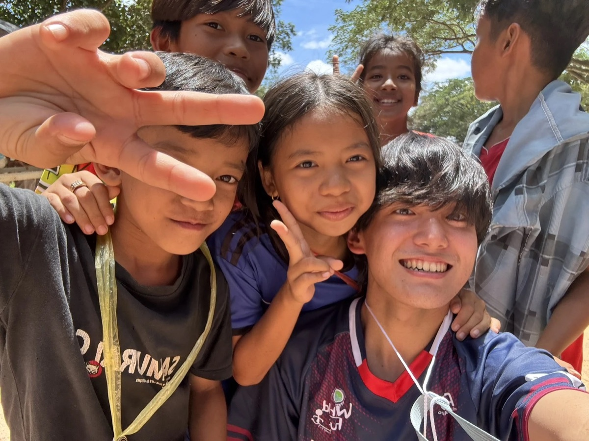

サッカーの力を信じて、子どもたちに挑戦のきっかけを。
私たちの活動は、2008年にスマオン小学校への支援から始まりました。先輩方が積み重ねてきた歩みを受け継ぎ、「サッカーを通して、すべての人がキラキラ笑って暮らすきっかけをつくる」という思いを、今年も大切にしてきました。
現地では子どもたちが楽しそうにボールを追いかける姿や真剣に練習する姿をたくさん見ました。サッカーというスポーツの持つ力と底なしの子どもたちの溢れる活力が印象に残っています。
活動を続けられるのは、協賛してくださる企業の皆さま、応援してくださる保護者の皆さま、OB・OGの皆さまのおかげです。心から感謝しています。
これからも、サッカーの力や魅力を信じ、子どもたちにより多くの挑戦のきっかけを提供し続けていくことを大切にしていきたいです。
そして子どもたちの夢と笑顔のために、仲間と一緒に歩んでいきます。どうぞ温かく見守っていただけたらうれしいです。